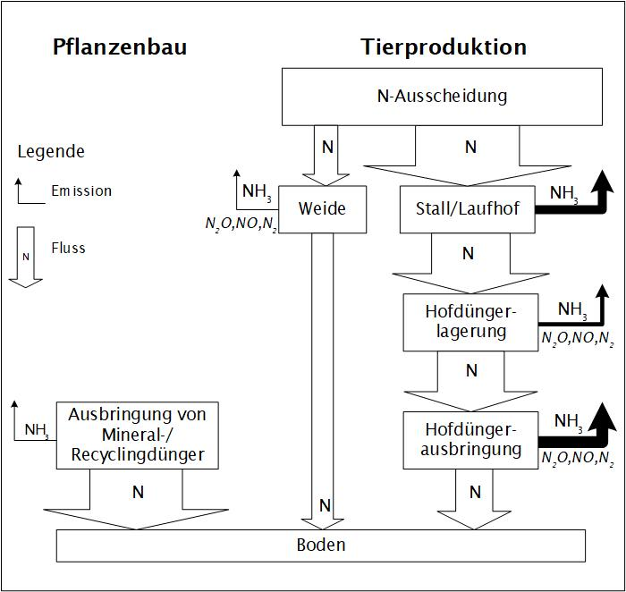

Die verwendeten Berechnungsgrundlagen wie Emissionsfaktoren und Annahmen zur Wirkung verschiedener Einflussgrössen beruhen — soweit vorhanden — auf wissenschaftlichen Versuchen in der Schweiz. Wo solche fehlten, wurden Daten aus dem Ausland beigezogen und so weit möglich auf die Bedingungen in der Schweiz angepasst.
Die Berechnungsgrundlagen wurden mit den von der UNECE (United Nations Economic Commission for Europe) vorgeschlagenen Werten abgestimmt. Falls in der Fachliteratur keine detaillierten Angaben verfügbar waren, kamen Expertenschätzungen zur Anwendung.
Das Modell wird laufend weiterentwickelt und dem Stand des Wissens angepasst. Voraussetzung dazu sind aktuelle Forschungsergebnisse — etwa aus den geplanten Versuchen im Emissionsversuchsstall von Agroscope in Tänikon, in denen typische Schweizer Rindviehhaltungssysteme mit optimierten Systemen verglichen werden.
